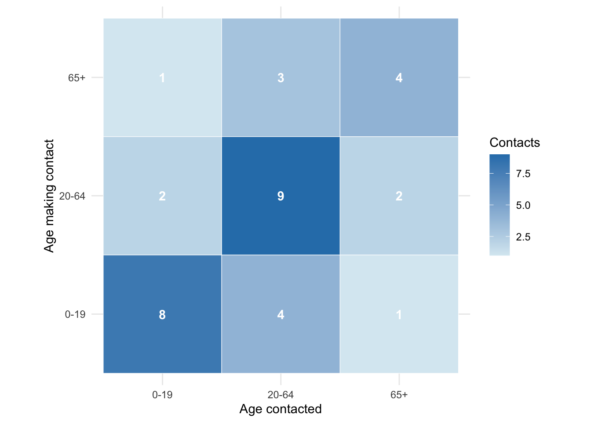
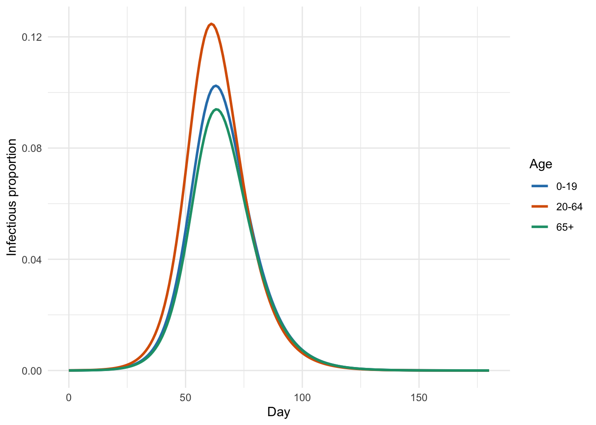
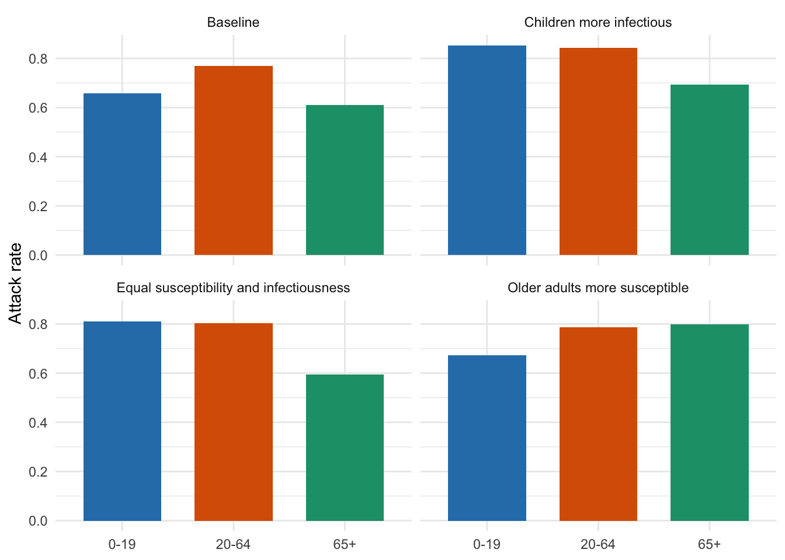
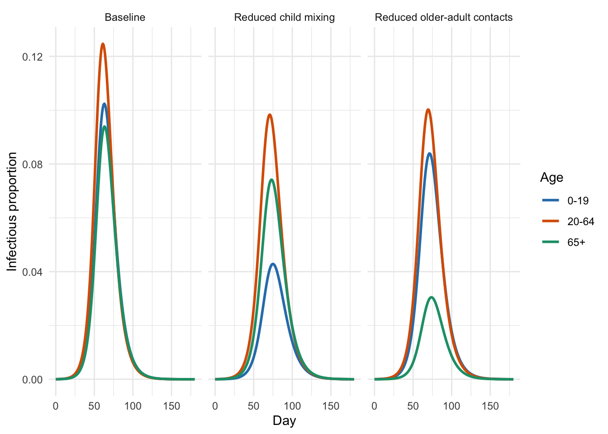
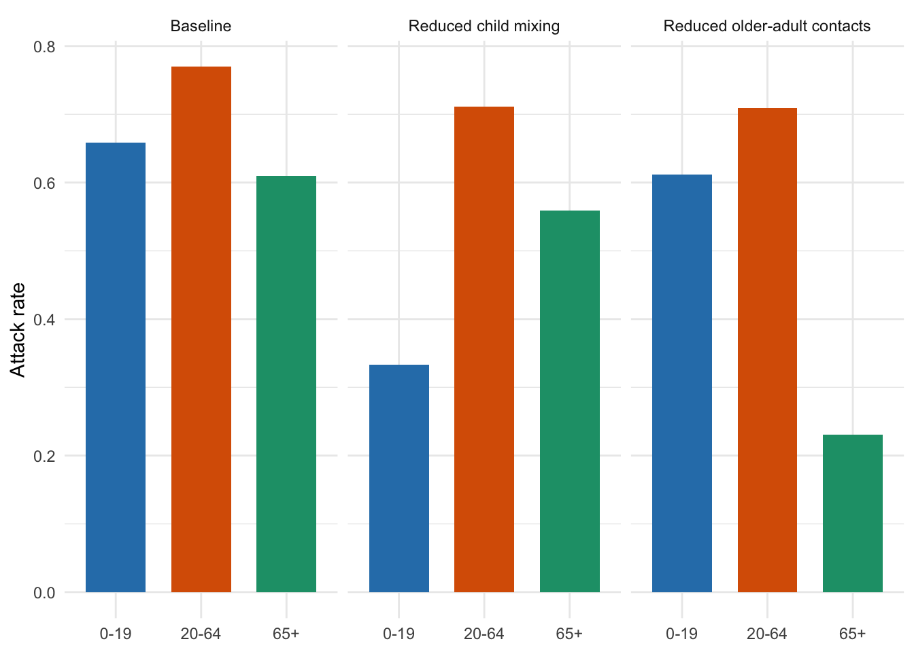

Adding age structure to SIR models
Short training course
Presenter: SPARKLE Training Team
Session overview and timing (3 hours total)
This session introduces age structure as a practical extension of the SIR model. It is deliberately lighter on technical details than a full heterogeneous mixing lecture. The goal is for students to leave able to read, run, and modify an age-structured SIR model.
Part 1: Why and how to add age structure (~45 min)
- Motivation and examples: ~10 min.
- From scalar SIR to age-indexed SIR equations: ~15 min.
- R practical: run a three-age-group SIR model: ~20 min.
Part 2: Susceptibility and infectiousness by age (~45 min)
- What susceptibility and infectiousness multipliers mean: ~10 min.
- R practical: change age-specific multipliers and interpret results: ~25 min.
- Debrief: which assumptions changed, and what changed in the output?: ~10 min.
Part 3: Changing contact assumptions and scenarios (~70 min)
- Revisit matrix orientation and reciprocity: ~10 min.
- R practical: school-like and shielding-like contact changes: ~40 min.
- Optional
conmatdiscussion: ~10 min. - Group interpretation and wrap-up: ~10 min.
General notes
- The core code only uses
deSolveandggplot2. - The session uses three broad age groups to keep the coding and interpretation manageable.
- The
conmatpackage is useful for generating synthetic contact matrices, but it is not required for this session. Use it as an optional extension if the group already has it installed and is comfortable with more realistic age bands.
Summary
This session extends a basic SIR model so that susceptibility, infectiousness, and contact rates can differ by age.
This session is divided into three parts:
Part 1 covers:
- Why age structure matters
- Writing one SIR model per age group
- Coupling age groups through infection
- Running a simple age-structured model in R
Part 2 covers:
- Age-specific susceptibility
- Age-specific infectiousness
- How to interpret changes in epidemic curves and attack rates
Part 3 covers:
- Revisiting the contact matrix introduced in Part 1
- Changing contact assumptions in a structured model
- Scenarios such as school-like contact reductions and older-adult shielding
- When a package such as
conmatmay be useful
We recommend saving your text at the end of each part by printing the file.
Part 1: Why Add Age Structure?
Motivation
Start with intuition rather than equations. Ask students to name diseases where age is clearly important, and ask them to separate mechanisms: biological susceptibility, infectiousness, contact patterns, severity, vaccination, and reporting. This session models only the first three.
The basic SIR model assumes that every susceptible person has the same infection risk and every infectious person contributes equally to transmission. That is useful, but it can miss important age-related patterns.
Age may matter because:
- children, adults, and older adults can have different susceptibility;
- infectious people of different ages can have different infectiousness;
- people make different numbers and types of contacts by age;
- outcomes such as hospitalisation and death can differ strongly by age.
In this session we focus on transmission. We will not model severity, vaccination, or age-specific reporting, but the same age groups could later be used for those extensions.
Choose one infectious disease. For that disease, list one reason age might affect transmission and one reason age might affect outcomes.
From one SIR model to several
In the basic SIR model:
\[ \frac{dS}{dt} = -\lambda S \]
\[ \frac{dI}{dt} = \lambda S - \gamma I \]
\[ \frac{dR}{dt} = \gamma I \]
where \(\lambda = \beta I/N\) is the force of infection.
With age groups, each state gets an age index:
\[ \frac{dS_i}{dt} = -\lambda_i S_i \]
\[ \frac{dI_i}{dt} = \lambda_i S_i - \gamma I_i \]
\[ \frac{dR_i}{dt} = \gamma I_i \]
where \(i\) indexes the age group. The main new task is defining \(\lambda_i\), the force of infection experienced by susceptibles in age group \(i\).
A three-age-group example
We will use three broad age groups:
0-1920-6465+
The population sizes, contact matrix, susceptibility, and infectiousness values below are toy values for teaching. They are not intended to represent a particular country or pathogen.
age_labels <- c("0-19", "20-64", "65+")
n_groups <- length(age_labels)
population <- c(250000, 600000, 150000)
names(population) <- age_labels
contact_matrix <- matrix(
c(
8, 4, 1,
2, 9, 2,
1, 3, 4
),
nrow = n_groups,
byrow = TRUE
)
rownames(contact_matrix) <- age_labels
colnames(contact_matrix) <- age_labels
susceptibility <- c(0.8, 1.0, 1.2)
infectiousness <- c(0.9, 1.0, 0.8)
names(susceptibility) <- age_labels
names(infectiousness) <- age_labels
gamma <- 1 / 5We read the contact matrix as:
\[ C_{ij} = \text{average daily contacts made by a person in age group } i \text{ with people in age group } j. \]
This orientation is chosen for teaching: rows are the susceptible/contact-making group and columns are the contacted/source group. Real contact matrix packages sometimes use different conventions. Make students check orientation before using any matrix in a model.
contact_plot_data <- data.frame(
Age_making_contact = rep(age_labels, each = n_groups),
Age_contacted = rep(age_labels, times = n_groups),
Contacts = as.vector(t(contact_matrix))
)
ggplot(contact_plot_data, aes(x = Age_contacted, y = Age_making_contact, fill = Contacts)) +
geom_tile(colour = "white") +
geom_text(aes(label = Contacts), colour = "white", fontface = "bold") +
scale_fill_gradient(low = "#D9EAF2", high = "#2C7FB8") +
coord_equal() +
labs(x = "Age contacted", y = "Age making contact", fill = "Contacts")
Use the heatmap to answer:
- Which age group has the most within-group mixing?
- Which between-age contacts are common?
- What kind of real-world settings might produce this pattern?
Force of infection by age
For this session we will use:
\[ \lambda_i = \beta s_i \sum_j C_{ij} q_j \frac{I_j}{N_j}, \]
where:
- \(s_i\) is susceptibility of age group \(i\);
- \(q_j\) is infectiousness of age group \(j\);
- \(C_{ij}\) is the contact rate between age group \(i\) and age group \(j\);
- \(I_j/N_j\) is the infectious proportion in age group \(j\);
- \(\beta\) is transmission probability per effective contact.
In words: a susceptible person in age group \(i\) makes contacts with people in each age group \(j\), some fraction of those people are infectious, and susceptibility and infectiousness can modify the transmission risk.
A little mathematics: the next generation matrix
The single-group SIR model has one reproduction number. In an age-structured model, one infectious person can generate new infections across several age groups, so it is useful to collect those expected infections in a matrix.
Following Diekmann, Heesterbeek and Roberts (2010), the next generation matrix has entries:
\[ K_{ij} = \text{expected new infections in group } i \text{ caused by one infectious person in group } j. \]
For our age-structured SIR model, at the disease-free equilibrium \(S_i = N_i\). If there is one infectious person in age group \(j\), then the rate at which they generate new infections in age group \(i\) is:
\[ \beta s_i C_{ij} q_j \frac{N_i}{N_j}. \]
Multiplying by the average infectious period, \(1 / \gamma\), gives:
\[ K_{ij} = \frac{\beta}{\gamma} s_i C_{ij} q_j \frac{N_i}{N_j}. \]
The basic reproduction number is then:
\[ \mathcal{R}_0 = \rho(K), \]
where \(\rho(K)\) is the dominant eigenvalue of \(K\).
This is the multi-group version of asking “how many secondary infections does one infectious person cause in a fully susceptible population?”. The difference is that the answer now depends on which age group the infectious person is in and which age groups they infect.
The point is not to turn this session into a linear algebra lecture. The main take-home is that \(\mathcal{R}_0\) becomes a property of the whole transmission system, not just one parameter. If students are comfortable with matrices, point out that the dominant eigenvalue captures repeated generations of transmission across age groups.
Helper functions
The next code block defines helper functions for the practical. You do not need to memorise the code. Focus on where contact_matrix, susceptibility, and infectiousness enter the model, and on how make_ngm() matches the formula above.
dominant_eigenvalue <- function(x) {
max(Re(eigen(x)$values))
}
make_ngm <- function(beta, contact_matrix, susceptibility, infectiousness, population, gamma) {
beta / gamma *
contact_matrix *
outer(susceptibility * population, infectiousness / population, "*")
}
run_age_sir <- function(contact_matrix,
susceptibility,
infectiousness,
scenario,
beta = NULL,
target_R0 = 1.8,
days = 180) {
if (is.null(beta)) {
beta <- target_R0 / dominant_eigenvalue(
make_ngm(
beta = 1,
contact_matrix = contact_matrix,
susceptibility = susceptibility,
infectiousness = infectiousness,
population = population,
gamma = gamma
)
)
}
model_R0 <- dominant_eigenvalue(
make_ngm(
beta = beta,
contact_matrix = contact_matrix,
susceptibility = susceptibility,
infectiousness = infectiousness,
population = population,
gamma = gamma
)
)
initial_infectious <- c(5, 25, 2)
initial_state <- c(
setNames(population - initial_infectious, paste0("S", seq_len(n_groups))),
setNames(initial_infectious, paste0("I", seq_len(n_groups))),
setNames(rep(0, n_groups), paste0("R", seq_len(n_groups)))
)
age_sir_model <- function(t, state, parameters) {
S <- as.numeric(state[paste0("S", seq_len(n_groups))])
I <- as.numeric(state[paste0("I", seq_len(n_groups))])
R <- as.numeric(state[paste0("R", seq_len(n_groups))])
lambda <- beta * susceptibility * as.vector(
contact_matrix %*% (infectiousness * I / population)
)
new_infections <- lambda * S
recoveries <- gamma * I
list(c(
setNames(-new_infections, paste0("S", seq_len(n_groups))),
setNames(new_infections - recoveries, paste0("I", seq_len(n_groups))),
setNames(recoveries, paste0("R", seq_len(n_groups)))
))
}
times <- seq(0, days, by = 1)
out <- as.data.frame(ode(
y = initial_state,
times = times,
func = age_sir_model,
parms = NULL
))
I_matrix <- as.matrix(out[paste0("I", seq_len(n_groups))])
S_matrix <- as.matrix(out[paste0("S", seq_len(n_groups))])
lambda_matrix <- t(apply(I_matrix, 1, function(I_now) {
beta * susceptibility * as.vector(contact_matrix %*% (infectiousness * I_now / population))
}))
incidence_matrix <- lambda_matrix * S_matrix
long_output <- do.call(rbind, lapply(seq_len(n_groups), function(i) {
data.frame(
time = out$time,
Age = age_labels[i],
S = out[[paste0("S", i)]],
I = out[[paste0("I", i)]],
R = out[[paste0("R", i)]],
Incidence = incidence_matrix[, i],
Population = population[i],
Scenario = scenario
)
}))
final_susceptible <- as.numeric(out[nrow(out), paste0("S", seq_len(n_groups))])
attack <- data.frame(
Scenario = scenario,
Age = age_labels,
Attack_rate = (population - final_susceptible) / population
)
summary <- data.frame(
Scenario = scenario,
beta = beta,
R0 = model_R0,
Overall_attack_rate = sum(population - final_susceptible) / sum(population)
)
list(
solution = long_output,
attack = attack,
summary = summary,
beta = beta
)
}The helper function uses a next generation matrix to scale the baseline model to a target \(\mathcal{R}_0\). Students do not need to be able to derive this from scratch, but they should understand that the dominant eigenvalue is the multi-group equivalent of \(\mathcal{R}_0\).
Before running the model, inspect the next generation matrix for the baseline assumptions. Rows are the age group newly infected and columns are the age group doing the infecting.
baseline_beta <- 1.8 / dominant_eigenvalue(
make_ngm(
beta = 1,
contact_matrix = contact_matrix,
susceptibility = susceptibility,
infectiousness = infectiousness,
population = population,
gamma = gamma
)
)
baseline_ngm <- make_ngm(
beta = baseline_beta,
contact_matrix = contact_matrix,
susceptibility = susceptibility,
infectiousness = infectiousness,
population = population,
gamma = gamma
)
knitr::kable(baseline_ngm, digits = 3)| 0-19 | 20-64 | 65+ | |
|---|---|---|---|
| 0-19 | 0.930 | 0.215 | 0.172 |
| 20-64 | 0.698 | 1.454 | 1.034 |
| 65+ | 0.105 | 0.145 | 0.620 |
dominant_eigenvalue(baseline_ngm)[1] 1.8Run the baseline model
baseline <- run_age_sir(
contact_matrix = contact_matrix,
susceptibility = susceptibility,
infectiousness = infectiousness,
scenario = "Baseline",
beta = baseline_beta
)
ggplot(baseline$solution, aes(x = time, y = I / Population, colour = Age)) +
geom_line(linewidth = 1) +
scale_colour_manual(values = c("0-19" = "#2C7FB8", "20-64" = "#D95F02", "65+" = "#1B9E77")) +
labs(x = "Day", y = "Infectious proportion", colour = "Age")
knitr::kable(baseline$summary, digits = 3)| Scenario | beta | R0 | Overall_attack_rate |
|---|---|---|---|
| Baseline | 0.032 | 1.8 | 0.718 |
knitr::kable(baseline$attack, digits = 3)| Scenario | Age | Attack_rate | |
|---|---|---|---|
| 0-19 | Baseline | 0-19 | 0.658 |
| 20-64 | Baseline | 20-64 | 0.770 |
| 65+ | Baseline | 65+ | 0.610 |
Change the initial infectious numbers inside run_age_sir(). Seed the outbreak mostly in children, then mostly in older adults. What changes, and what stays similar?
Part 2: Susceptibility and Infectiousness
What do the multipliers mean?
This is a good place to slow down and make sure the group separates susceptibility from infectiousness. Susceptibility belongs to the person who may become infected. Infectiousness belongs to the person who is already infected.
Age-specific susceptibility changes how likely a susceptible person is to become infected after an effective contact. In our force of infection this is \(s_i\).
Age-specific infectiousness changes how much an infectious person contributes to transmission. In our force of infection this is \(q_j\).
For example:
- If children have \(s_i = 0.7\), they are 30% less susceptible than the reference group.
- If adults have \(q_j = 1.2\), infectious adults are 20% more infectious than the reference group.
These are modelling assumptions. They may come from biology, behaviour, prior studies, or sensitivity analysis.
For each statement, decide whether it changes susceptibility, infectiousness, contact, or severity.
- Older adults are more likely to become infected after exposure.
- Children have more close contacts at school.
- A symptomatic age group coughs more and transmits more efficiently.
- Hospitalisation risk is higher in older adults.
Scenario practice
We will keep the same baseline beta and change the age-specific multipliers. This lets us see how the epidemic changes if the biology changes.
equal_biology <- run_age_sir(
contact_matrix = contact_matrix,
susceptibility = c(1, 1, 1),
infectiousness = c(1, 1, 1),
scenario = "Equal susceptibility and infectiousness",
beta = baseline$beta
)
older_more_susceptible <- run_age_sir(
contact_matrix = contact_matrix,
susceptibility = c(0.8, 1.0, 1.8),
infectiousness = infectiousness,
scenario = "Older adults more susceptible",
beta = baseline$beta
)
children_more_infectious <- run_age_sir(
contact_matrix = contact_matrix,
susceptibility = susceptibility,
infectiousness = c(1.6, 1.0, 0.8),
scenario = "Children more infectious",
beta = baseline$beta
)
biology_summaries <- rbind(
equal_biology$summary,
baseline$summary,
older_more_susceptible$summary,
children_more_infectious$summary
)
knitr::kable(biology_summaries, digits = 3)| Scenario | beta | R0 | Overall_attack_rate |
|---|---|---|---|
| Equal susceptibility and infectiousness | 0.032 | 1.965 | 0.773 |
| Baseline | 0.032 | 1.800 | 0.718 |
| Older adults more susceptible | 0.032 | 1.913 | 0.760 |
| Children more infectious | 0.032 | 2.178 | 0.823 |
biology_attack <- rbind(
equal_biology$attack,
baseline$attack,
older_more_susceptible$attack,
children_more_infectious$attack
)
ggplot(biology_attack, aes(x = Age, y = Attack_rate, fill = Age)) +
geom_col(width = 0.7) +
facet_wrap(~ Scenario) +
scale_fill_manual(values = c("0-19" = "#2C7FB8", "20-64" = "#D95F02", "65+" = "#1B9E77")) +
labs(x = NULL, y = "Attack rate") +
theme(legend.position = "none")
Make one new scenario. Choose either susceptibility or infectiousness to change, run the model, and write a two-sentence interpretation of the result.
If students are unsure what to try, suggest: children less susceptible but more infectious; older adults less infectious because they reduce contacts when sick; or adults more infectious because they have more work contacts not fully captured by the toy matrix.
Part 3: Changing Contact Assumptions
We already have a contact matrix
The heatmap in Part 1 already introduced the contact matrix. This part is not a second introduction to contact matrices; it is about what happens when we change the contact assumptions inside the same age-structured SIR model.
The matrix orientation still matters. In this session:
- rows are the age group making the contact;
- columns are the age group contacted;
- \(C_{ij}\) is the average daily number of contacts from group \(i\) to group \(j\).
Many empirical or synthetic matrices are also adjusted to satisfy reciprocity:
\[ N_i C_{ij} \approx N_j C_{ji}. \]
That means the total number of contacts from age group \(i\) to age group \(j\) should roughly match the total number of contacts from age group \(j\) to age group \(i\).
Do not spend too long on reciprocity. It is enough for students to know that contact matrices are not arbitrary heatmaps. The same physical contact is counted from two age perspectives, so population sizes matter.
Contact-change scenarios
We will compare two simple contact interventions while keeping the same biological assumptions and baseline beta.
The first reduces child-child and child-adult mixing, like a school-holiday or school-closure scenario. The second reduces contacts involving older adults, like a shielding scenario.
Step 1: Create new contact matrices
Start by copying the baseline contact matrix. Then change only the entries needed for each scenario.
school_like_matrix <- contact_matrix
school_like_matrix["0-19", "0-19"] <- 0.35 * school_like_matrix["0-19", "0-19"]
school_like_matrix["0-19", "20-64"] <- 0.65 * school_like_matrix["0-19", "20-64"]
school_like_matrix["20-64", "0-19"] <- 0.65 * school_like_matrix["20-64", "0-19"]The school-like scenario changes three entries: contacts from children to children, children to adults, and adults to children. It does not change older-adult contacts directly.
shielding_matrix <- contact_matrix
shielding_matrix[, "65+"] <- 0.45 * shielding_matrix[, "65+"]
shielding_matrix["65+", ] <- 0.45 * shielding_matrix["65+", ]The shielding scenario changes all contacts where older adults are either the contacted group or the group making the contact.
knitr::kable(school_like_matrix, digits = 2)| 0-19 | 20-64 | 65+ | |
|---|---|---|---|
| 0-19 | 2.8 | 2.6 | 1 |
| 20-64 | 1.3 | 9.0 | 2 |
| 65+ | 1.0 | 3.0 | 4 |
knitr::kable(shielding_matrix, digits = 2)| 0-19 | 20-64 | 65+ | |
|---|---|---|---|
| 0-19 | 8.00 | 4.00 | 0.45 |
| 20-64 | 2.00 | 9.00 | 0.90 |
| 65+ | 0.45 | 1.35 | 0.81 |
Step 2: Run each scenario
Now run the age-structured SIR model with each modified matrix. We keep beta = baseline$beta so that any differences come from the contact changes rather than a new transmission probability.
school_like <- run_age_sir(
contact_matrix = school_like_matrix,
susceptibility = susceptibility,
infectiousness = infectiousness,
scenario = "Reduced child mixing",
beta = baseline$beta
)
shielding <- run_age_sir(
contact_matrix = shielding_matrix,
susceptibility = susceptibility,
infectiousness = infectiousness,
scenario = "Reduced older-adult contacts",
beta = baseline$beta
)Step 3: Compare reproduction numbers and attack rates
The summary table recalculates \(\mathcal{R}_0\) for each changed contact matrix and reports the overall attack rate.
contact_summaries <- rbind(
baseline$summary,
school_like$summary,
shielding$summary
)
knitr::kable(contact_summaries, digits = 3)| Scenario | beta | R0 | Overall_attack_rate |
|---|---|---|---|
| Baseline | 0.032 | 1.800 | 0.718 |
| Reduced child mixing | 0.032 | 1.667 | 0.594 |
| Reduced older-adult contacts | 0.032 | 1.681 | 0.613 |
Step 4: Compare epidemic curves
Bind the model outputs into one data frame so that ggplot() can facet by scenario.
contact_solution <- rbind(
baseline$solution,
school_like$solution,
shielding$solution
)
ggplot(contact_solution, aes(x = time, y = I / Population, colour = Age)) +
geom_line(linewidth = 1) +
facet_wrap(~ Scenario) +
scale_colour_manual(values = c("0-19" = "#2C7FB8", "20-64" = "#D95F02", "65+" = "#1B9E77")) +
labs(x = "Day", y = "Infectious proportion", colour = "Age")
Step 5: Compare final attack rates by age
The attack-rate plot shows which age groups benefit most under each contact-change assumption.
contact_attack <- rbind(
baseline$attack,
school_like$attack,
shielding$attack
)
ggplot(contact_attack, aes(x = Age, y = Attack_rate, fill = Age)) +
geom_col(width = 0.7) +
facet_wrap(~ Scenario) +
scale_fill_manual(values = c("0-19" = "#2C7FB8", "20-64" = "#D95F02", "65+" = "#1B9E77")) +
labs(x = NULL, y = "Attack rate") +
theme(legend.position = "none")
Full code for the contact-change scenarios
school_like_matrix <- contact_matrix
school_like_matrix["0-19", "0-19"] <- 0.35 * school_like_matrix["0-19", "0-19"]
school_like_matrix["0-19", "20-64"] <- 0.65 * school_like_matrix["0-19", "20-64"]
school_like_matrix["20-64", "0-19"] <- 0.65 * school_like_matrix["20-64", "0-19"]
shielding_matrix <- contact_matrix
shielding_matrix[, "65+"] <- 0.45 * shielding_matrix[, "65+"]
shielding_matrix["65+", ] <- 0.45 * shielding_matrix["65+", ]
school_like <- run_age_sir(
contact_matrix = school_like_matrix,
susceptibility = susceptibility,
infectiousness = infectiousness,
scenario = "Reduced child mixing",
beta = baseline$beta
)
shielding <- run_age_sir(
contact_matrix = shielding_matrix,
susceptibility = susceptibility,
infectiousness = infectiousness,
scenario = "Reduced older-adult contacts",
beta = baseline$beta
)
contact_summaries <- rbind(
baseline$summary,
school_like$summary,
shielding$summary
)
knitr::kable(contact_summaries, digits = 3)
contact_solution <- rbind(
baseline$solution,
school_like$solution,
shielding$solution
)
ggplot(contact_solution, aes(x = time, y = I / Population, colour = Age)) +
geom_line(linewidth = 1) +
facet_wrap(~ Scenario) +
scale_colour_manual(values = c("0-19" = "#2C7FB8", "20-64" = "#D95F02", "65+" = "#1B9E77")) +
labs(x = "Day", y = "Infectious proportion", colour = "Age")
contact_attack <- rbind(
baseline$attack,
school_like$attack,
shielding$attack
)
ggplot(contact_attack, aes(x = Age, y = Attack_rate, fill = Age)) +
geom_col(width = 0.7) +
facet_wrap(~ Scenario) +
scale_fill_manual(values = c("0-19" = "#2C7FB8", "20-64" = "#D95F02", "65+" = "#1B9E77")) +
labs(x = NULL, y = "Attack rate") +
theme(legend.position = "none")Build one contact scenario of your own. For example:
- Increase adult-adult contacts by 25%.
- Reduce all between-age-group contacts by 50%.
- Reduce only contacts made by older adults.
- Create a “festival” scenario with more mixing between all groups.
Run the model and describe who benefits, who does not, and why.
Optional extension: using conmat
The conmat package generates synthetic contact matrices for a given age population. Its documentation describes contact matrices as the number of contacts between age groups and notes that, in conmat, rows are “age group to” and columns are “age group from”. The package also includes tools for generating next generation matrices.
For this session we used a small hand-written matrix because:
- it keeps the practical runnable without extra installation;
- three age groups are easier to inspect and understand;
- students can see exactly how changing one matrix entry affects the model.
If you later use conmat or another contact-matrix package, check:
- the row and column orientation;
- the age bands;
- whether the matrix is daily contacts or another time scale;
- whether contacts are all settings combined or split by setting;
- whether the matrix has been made reciprocal for the target population.
# Optional only: this session does not require conmat.
# Install instructions from the conmat website use the ID-EM r-universe:
# install.packages(
# "conmat",
# repos = c("https://idem-lab.r-universe.dev", "https://cloud.r-project.org")
# )
#
# library(conmat)
# ?conmat::generate_ngmSuppose you have a 16-age-group contact matrix from a package, but your model has only three age groups. What decisions would you need to make before using it in this session’s model?
Further reading
- Diekmann, O. and Heesterbeek, J. A. P. (2000). Mathematical Epidemiology of Infectious Diseases: Model Building, Analysis and Interpretation. Wiley. Wageningen University & Research record.
- Diekmann, O., Heesterbeek, J. A. P. and Roberts, M. G. (2010). The construction of next-generation matrices for compartmental epidemic models. Journal of the Royal Society Interface, 7, 873-885. doi:10.1098/rsif.2009.0386.
Wrap-up
By the end of this session, you should be able to:
- explain why age structure can change epidemic dynamics;
- write down age-indexed SIR equations;
- distinguish susceptibility, infectiousness, and contact differences;
- interpret a contact matrix;
- modify an age-structured SIR model in R;
- compare simple contact-change scenarios.
Contributors
- Prof. Roslyn Hickson
- Dr Eamon Conway